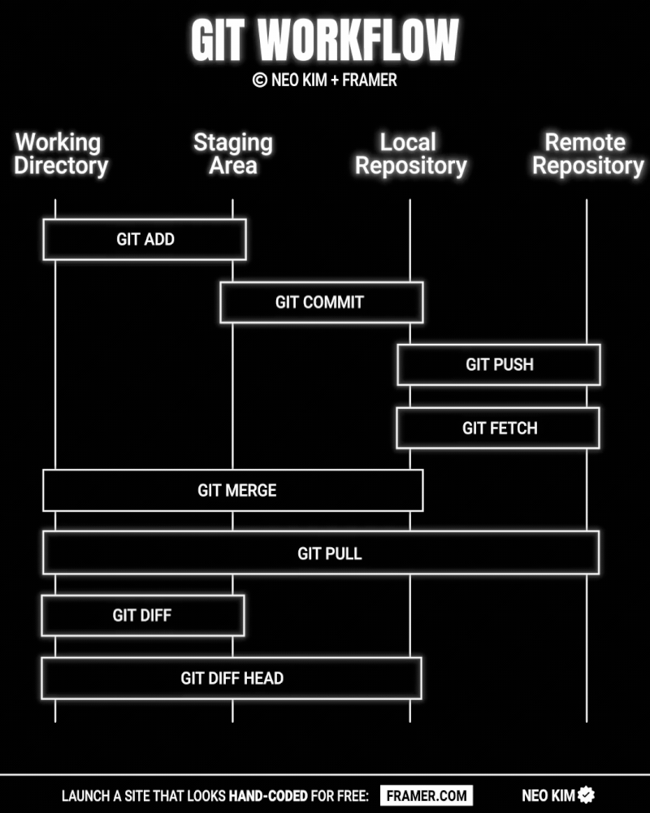
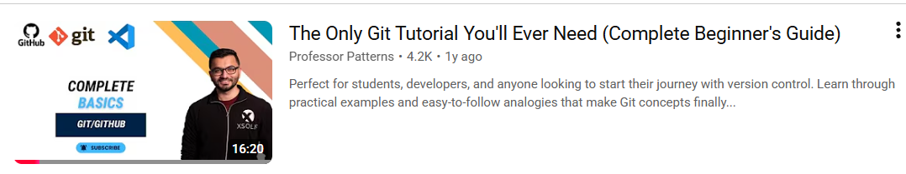

Git
Spara versioner av din kod, ångra misstag och samarbeta.
Känns det här igen?
Kaffekoppen.zip
Kaffekoppen_kopia.zip
Kaffekoppen_FUNKAR.zip
Kaffekoppen_FUNKAR_final.zip
Kaffekoppen_FUNKAR_final_v2_NY.zipGit löser det här: en mapp, och hela historiken finns inuti.
Git och GitHub
| Git | GitHub |
|---|---|
| Ett program på din dator | En webbplats |
| Sparar historiken för ditt projekt | Lagrar och delar Git-repon |
| Fungerar utan internet | Där man samarbetar |
Olika platser du kan jobba med Git
Det är samma Git överallt. Ett repo du committar i Visual Studio kan du pusha från terminalen.
En commit = ett foto
En commit är en sparad ögonblicksbild av hela projektet, med ett meddelande.
Du kan alltid titta på – eller gå tillbaka till – vilket foto som helst.
De tre platserna
→
→
Staging = du väljer vilka ändringar som ska med på nästa foto.
Git workflow

Ställ in Git (en gång)
git --version
git config --global user.name "Ada Lovelace"
git config --global user.email "ada@exempel.se"
git config --global init.defaultBranch mainDitt första repo
mkdir GitDemo
cd GitDemo
dotnet new console
dotnet new gitignore # bin/ och obj/ ska inte sparas
git initArbetsflödet
git status # vad har ändrats?
git add . # lägg allt i staging
git commit -m "Lägg till Drink" # sparaÄndra → status → add → commit
… om och om igen
Bra commit-meddelanden
| Dåligt | Bra |
|---|---|
fix | Rätta studentrabatten |
asdf | Lägg till klassen Pastry |
massa ändringar | En commit per sak |
"Den här commiten kommer att … lägga till klassen Pastry."
Titta i historiken
git log --oneline
a81d4e2 Lägg till klassen Drink
7c90b13 Lägg till basklassen Product
3f2a1c9 Skapa konsolprojekt
git diff
- return 0;
+ return basePrice;Ångra
| Jag vill … | Kommando |
|---|---|
| Få tillbaka filen som vid senaste commit | git restore Program.cs |
| Ta bort en fil från staging | git restore --staged Program.cs |
| Ångra en gammal commit | git revert a81d4e2 |
Det som är commitat går nästan alltid att få tillbaka. Commita ofta!
Branches
Ett eget spår där du provar något nytt – utan att förstöra main.
Branch och merge
git switch -c studentrabatt # ny branch
# ... ändra, add, commit ...
git switch main # tillbaka
git merge studentrabatt # slå ihop
git branch -d studentrabatt # städaMerge-konflikt
Två branches har ändrat samma rad:
<<<<<<< HEAD
return basePrice + 5;
=======
return basePrice + 8;
>>>>>>> studentrabattVälj vad som ska stå kvar, ta bort markeringarna, sedan git add + git commit.
GitHub
git remote add origin https://github.com/ditt-namn/GitDemo.git
git push -u origin maingit clone <url> | Ladda ner ett repo |
git push | Skicka upp dina commits |
git pull | Hämta ner andras commits |
Ett nytt repo på GitHub
När du skapar ett tomt repo visar GitHub en sida med Quick setup – och kommandona du behöver.

Kommandona från GitHub
Inget repo än – skapa ett nytt
echo "# testtest" >> README.md # skapa en README
git init # gör mappen till ett repo
git add README.md
git commit -m "first commit"
git branch -M main # döp branchen till main
git remote add origin https://github.com/malmludvig/testtest.git
git push -u origin main # skicka upp och koppla ihopHar redan ett repo – pusha det
git remote add origin https://github.com/malmludvig/testtest.git
git branch -M main
git push -u origin mainHar du redan gjort git init och commits? Då räcker de tre raderna till höger. Byt malmludvig/testtest mot ditt eget namn och repo.
Git i Visual Studio
| Kommando | I Visual Studio |
|---|---|
git init | Git → Create Git Repository… |
git status | Fönstret Git Changes |
git add | + vid filen |
git commit | Commit Staged |
git push / pull | Pilarna ↑ ↓ |
Git i terminalen – cheat sheet
Viktigaste Git-kommandona
git init | Starta ett nytt lokalt Git-repo |
git status | Kolla Git-status |
git add . | Lägg till alla ändringar till staging (här läggs allting till innan en commit) |
git commit -m "new commit" | Skapa en ny version (commit) med allt som är tillagt i staging |
git log | Visa commit-historikgit log --graph --oneline --all |
Jobba mot remote repo (GitHub)
git pull | Hämta remote-versionen och merga koden |
git push | Ladda upp lokalt repo till remote repo |
git clone | Används första gången man hämtar ett remote repogit clone https://github.com/username/repo.git |
git fetch | Hämta remote-versionen men gör ingen merge |
Alltid vid nytt GitHub-repo
git remote add origin https://github.com/username/repo.git
git branch -M main
git push -u origin mainNavigera filsystem
ls | Visa mappar och filer |
cd | Byt mapp: cd Desktopcd .. går uppåt/bakåt i filsystemet |
mkdir | Skapa ny mapp: mkdir nyMapp |
Konfiguration
Ställ in användaren (vilket namn som helst):
git config --global user.name "Ludvig M"
git config --global user.email "m@mail.se"
git config --global --listKolla vilket remote repo du är kopplad till:
git remote -vByt Git-editor till VS Code (Vim är standard):
git config --global core.editor "code --wait"
git config --global core.editorBranches och merge + git diff
git branch | Visa vilka branches som finns och vilken du står igit branch -a listar även remote-branches |
git branch dev-branch | Skapa en ny branch som heter dev-branch |
git checkout | Byt branch: git checkout dev-branch, git checkout main |
git switch | Byt branch (nyare och tydligare än checkout): git switch dev-branchgit switch -c dev-branch skapar en ny branch och byter till den |
git merge | Merga ihop branchen du står i med den du skriver: git merge dev-branch |
git merge --abort | Avbryt en merge |
git diff | Visa ändringar mellan arbetsmappen och staging |
2025, Ludvig Malm, ZoCom
Video: komplett nybörjarguide

Sammanfattning
| Kommando | Gör |
|---|---|
git init | Nytt repo |
git status | Vad har ändrats? |
git add . | Till staging |
git commit -m "…" | Spara en ögonblicksbild |
git log --oneline | Historiken |
git switch -c / merge | Branch / slå ihop |
git push / pull | Upp / ner till GitHub |
Nu: Git-sidan – läs exemplen och gör övningarna.
Piltangenterna byter bild ·